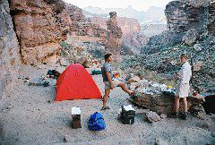
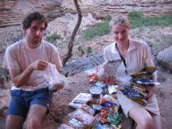
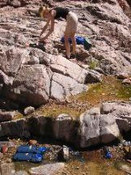
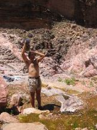
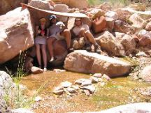
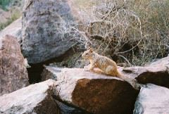
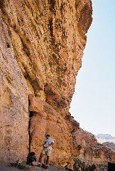
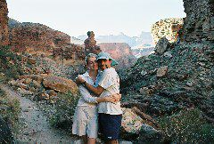

|

Back on Monument Creek |

Food recount |

Dishes and water cooling |
|

Shower in the creek |

Hiding from the sun |
|
|

Another thieving squirrel |

Leaving the campsite |

|
After noon, we took down camp again to walk a short distance of about 3km up the creek, which we covered in less than an hour to enjoy the sights of Monument Creek. That night we slept for the first time under the stars. Sleeping outside did not really alleviate the heat although it was better than the tent.
Monument Creek was also an excellent location. The small creek there allowed us to get plenty of water, to wash the clothes and to improvise some showers. We spent most of the day around the creek, just enjoying the fresh air and seeking refuge from the sun.
<--Previous day | Next day--> * Index